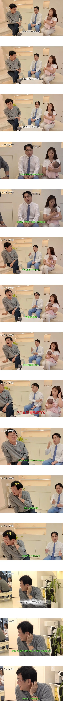

아기가 돌도 안지난것같은데
저때 육아가 힘들기도 하지만 정말 아기 이쁨
새벽에 우유 먹인다고 깨서 꾸벅꾸벅 조는게 힘들기는 하지만 그 이상의 기쁨을 줌
대부분의 한국 남성들은 본문 남성과 다르게 와이프와 같이 갓난아기 육아를 함

아기가 돌도 안지난것같은데
저때 육아가 힘들기도 하지만 정말 아기 이쁨
새벽에 우유 먹인다고 깨서 꾸벅꾸벅 조는게 힘들기는 하지만 그 이상의 기쁨을 줌
대부분의 한국 남성들은 본문 남성과 다르게 와이프와 같이 갓난아기 육아를 함
장점으로 내새우는게 좀 아쉽긴하네, 얼마나 바쁜 직업을 가지신분인지 모르겠고, 가사는 전업주부께서 하는게 맞다 생각하지만 육아까지 저렇게 던지듯이 말하는건 좀 그렇네
2인분만큼 일하겠지
말을 좀 이쁘게 하지. 물고 뜯기 좋은 말들만 던지네. 작가들이 요청했나.
국결 업체하는 사람이라 전략적으로 했을 듯
저러면 나중엔 다되돌아옴
멘트 뜯길것같으니까 경규형 바로 딴데보시네
생긴 거 보면 답이 다 나와있지
저건 걍 아내한테 존나 무례한건데
나도 퇴근후 씻기고 놀아주고 육아는 똑같이 했는데 새벽 수유&기저귀는 한번도 안했음
나는 출근해야 하니까 와이프가 당연히 그건 자기가 한다고 했음
한일부부 10년차
맞벌이 하지 않고서야 ㅋㅋ 남편은 돈 벌고 와이프 혼자 육아하는데,
독박육아 독박육아 하면서 직장 다니는 남자들 잡아먹는건 우리나라가 유일하긴 함.
일본이든 미국이든 일단 여자가 대부분 케어하고, 남자의 도움을 바라는데 (고마워함)
한국여자들은 남자 퇴근하면 이제 니가 해. 나는 쉬어야해 이 마인드로 생활하니까.
ㄹㅇ 이게 맞긴해
육아는 캐바캐가 심함
애키우는거 너무너무너무 힘들다하는 사람 있고
육휴기간동안 너무 편했다고 다시 임신한 사람도있음
일단 내 지인기준
절반은 육아 쉽다했고(개꿀이다가 아니라 일하는것보다)
절반은 너무 어렵다했음
본인 성향+애기 성격을 너무 타서
아내 안도와줘도되는 케이스도있고 남편이 있어야하는 케이스도있고근데 남편이 일해야 아내가 온전히 육아할수있음
육아스트레스 절반은 돈임
내 생각에 육아 스트레스를 많이 받는 사람들은 그 스트레스의 90퍼센트를 그냥 본인이 만들어내는거 같음.
90%까지는 몰라도 그런사람도있긴해 사실 애기 어린이집보내면 온전히 내 시간되는건데
아 술도못마시러 나가고 멀리도못가고 내인생 왜이러지 이러는 친구도있고
게임하고 애니보고 드라마보고 개꿀 하는 친구도있고
오!.....
음......
예?....
아니 걍 대놓고 한남 이미지 박아주시네 ㅋㅋㅋㅋ
주변에 일본여자랑 결혼한 케이스 보면 진짜 집가면 다해줌 수고했다고 해주고 육아도 가정 보육으로 유치원 전까지 잘 보육하고 하는데!!!!!!!!!!!!! 맞벌이를 안함 ㅋㅋㅋㅋㅋㅋㅋ , 맘은 편한데 편한데 막 주말에 같이 애기 데리고 놀러도 가고 하는데 .. 몬가 힘들어 보여..ㅋㅋㅋ 문화 차이인거 같긴함
우리나라보다 일본이 더 맞벌이 많이 함
https://www.fnnews.com/news/202307280713312798
실제론 취업안되면 알바같은거라도 많이해서 가게 매꿔준다
https://youtu.be/Tl8r4eUglIQ?si=UblIi_R4w5TALty-
결정사 하시는 분이래
굳이 방송에서 븅신같이 말하는 태도는 뭘까? 아 결정사하니까 주목좀 끌고 싶었나 보네
대신 와이프가 일을 안하고 육아에만 전념하는거아님?
그러면 저게 룰상 당연하면서도 고마운 부분이라 저렇게 말하는거겠지
전업주부가 저거마저 독박육아라고 염병하는것보다는 훨씬 나으니 하는말 같은데
말을 저렇게 하냐 에혀 심한말 마렵네
와이프 칭찬을 하려면 확실하게 하세요. 제가 몸이 불편한 사람이나 어디 임금님처럼 집에서 편히 쉰다가 아니라,,, 어휴
말이 아다르고 어다른데 오 역시~ 하면서 보다가 어 음.. 내가봐도 좀 ㅋㅋ
칭찬으로 충분히 전달할 수 있는 표현을 저리 이야기하는것도 재능이군
십수년뒤 아빠는 돈이나 벌어와 라는 말들어도 업보라고 생각해야하나?
그냥 집에들어가면 편합니다 이정도만 말했어도 다들 열린결말이라 ㅋㅋ 스무스하게 지나갔을텐데

본인도 와이프 일본인인데, 가끔 문화차이 느낌.
근데... 낮동안은 각자 육아 및 가사, 직장일 나눠서 하는거고 퇴근 후에는 둘 다 육아정도는 나눠서 해야되는거 아니여?
1짤만 보고 지예은이랑 진용진인줄 아라뜨
전업주부면 저게 당연한건데, 왜 바깥일 하고 온 남편 쉬게하는건 안된다는 개념이 퍼진걸까..ㅋㅋ
애하나면 그럴만해 셋돼바라 ㅋㅋ
한국 남성의 육아참여도가 전세계 꼴지수준일건데
중동이랑 비빈다고? 페미발 씹소리 같은데
조슬까세요 ㅋㅋㅋㅋ
페미년이 본진가서놀지 남초와서 지랄이고
ㅋㅋㅋㅋㅋㅋㅋㅋ이런애들 있는거보면
뭐 지옥은 스스로 만드는거긴해~
위에 보니 호구들 많노
대신에 일본여자는 바람을 그렇게 많이 핀다며
여초에서 욕먹고있다 <- 인생 건실하게 잘 살고있다는 칭찬같은 것
애초에 맞벌이가 아닌 이상 여자가 집안일하면서 내조를 하는게 맞지 ㅋㅋㅋㅋ
분노한 퐁퐁이들 댓글다는거 ㅈㄴ 웃기네
불쌍한 새끼들.... 에휴
방송용 아닌가
주말부부여서 와이프가 처가 있었는데 주말마다 가서
애기 보는게 너무 좋았는데
나도 와이프전업이고 외벌이인데 새벽 수유는 한번도 안해봄. ㅋㅋ
다른 때는 최대한 나도 하려고 하는데
다음날 일해야 되니까
주로 와이프가 다함. 대신 연에한 번은
가방 하나씩 사 줌
집에 가면 편하다는거 중요하지